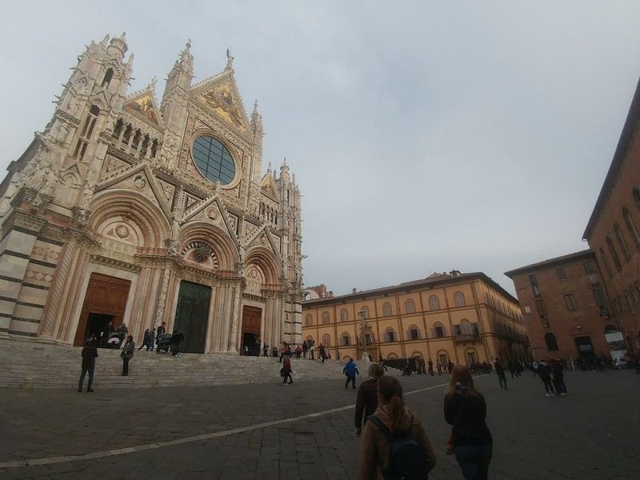
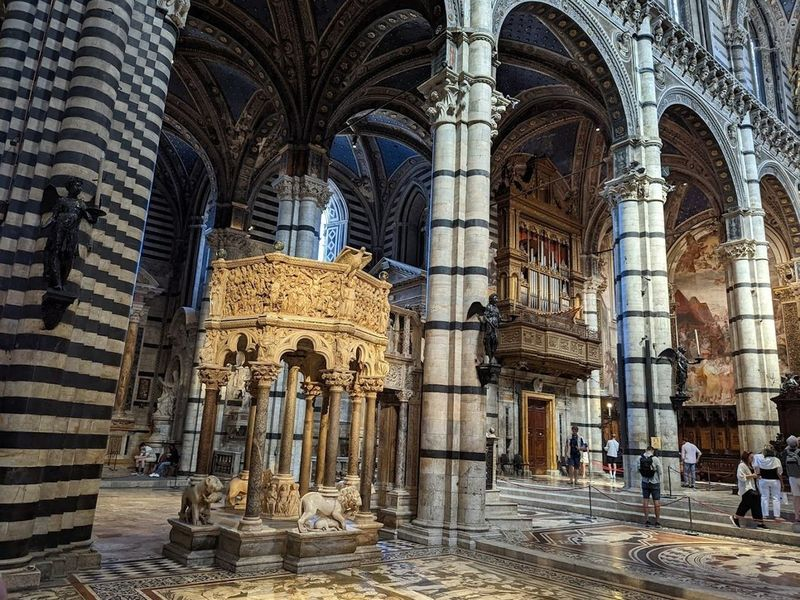
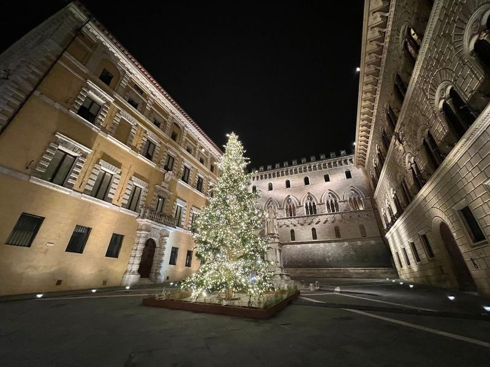
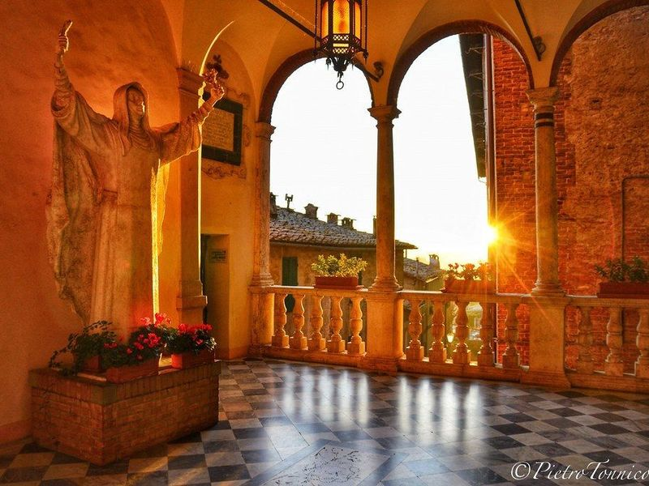
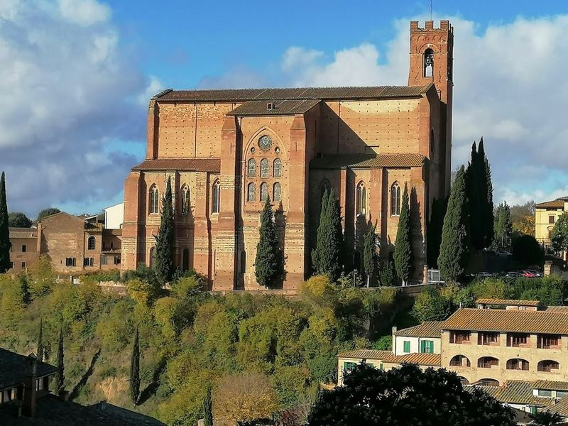
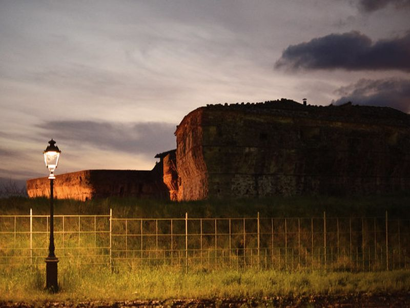
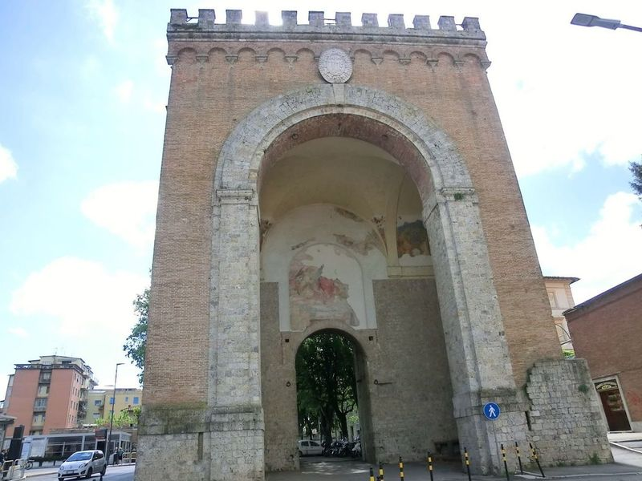
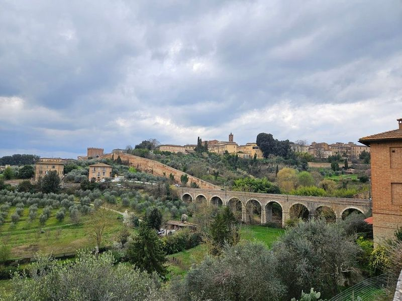
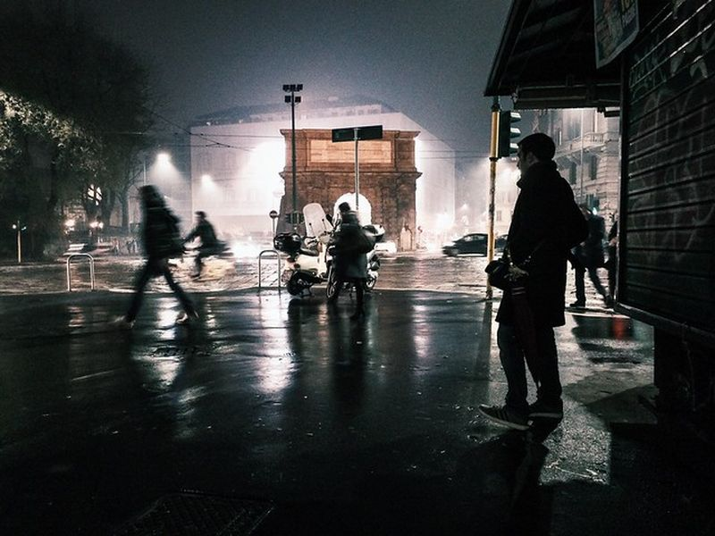
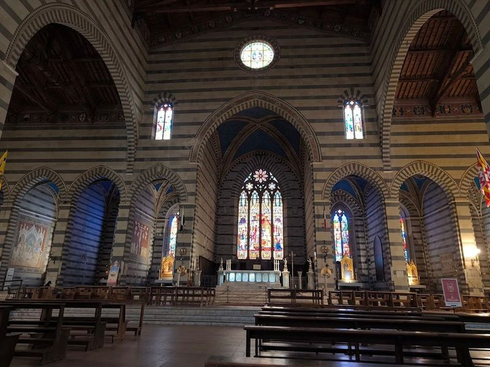

Explore Siena
A Brief History
Siena rivalled Florence as a banking republic until defeat at Montaperti in 1260 and later plague and Medici pressure ended its independence. The fan-shaped Piazza del Campo, Palazzo Pubblico frescoes, and striped cathedral embody Gothic civic art funded by the Monte dei Paschi bank founded in 1472. Seventeen contrade still stage the Palio horse race, preserving neighbourhood rivalries that date to medieval guild organisation in southern Tuscany.
Attractions Map
Top Sights & Activities

Piazza del Duomo
Piazza del Duomo is a central square in Siena, Italy, known for its towering cathedral and the Capitoline Wolf column. The Duomo of Siena features a floor with intricate mosaics that will be visible during specific periods. This masterpiece, created using the commesso marmoreo technique, is described as the most and ever made.

Siena Cathedral
Siena Cathedral, also known as the Duomo, is a 13th-century marvel renowned for its striking facade with symbolic black and white marble stripes. It stands as the main place of worship in Siena and dominates the city's skyline alongside the Torre del Mangia. The cathedral has a rich history, originally built to replace a church dedicated to Mary on a site that was once a temple for the worship of Minerva.

Palazzo Salimbeni
in the heart of Siena, Palazzo Salimbeni is a neo-Gothic palace that dates back to the 14th century. This architectural gem serves as the headquarters for Monte dei Paschi di Siena, recognized as one of the oldest banks in existence, established in 1472. The surrounding Piazza Salimbeni has undergone a remarkable transformation over the past 150 years, thanks to Giuseppe Partini's Renaissance redesign.

Sanctuary of Saint Catherine
Santuario Casa di Santa Caterina is a religious complex dedicated to honoring the life of Saint Catherine of Siena, one of Italy's patron saints. The sanctuary encompasses various structures such as an art-filled oratory, church, and Catherine's frescoed cell. It is believed to be built over her original birthplace and offers travellers the opportunity to explore her birth home where she was born in 1347 as the 23rd of 25 children.

Basilica Cateriniana di San Domenico
Basilica Cateriniana San Domenico is a striking Gothic cathedral in Siena, Italy. Built in the 13th century, it is renowned for its association with St. Catherine of Siena, who was declared a patron saint of Italy. The basilica houses a frescoed chapel displaying relics of St. Catherine, including her head and finger on a marble altar from 1469.

Fortezza Medicea
A historic fort offering panoramic views of Siena, now used for cultural events and as a public park. The site is catalogued as a tourist attraction. The site is catalogued as a tourist attraction. The site is catalogued as a tourist attraction. Fortezza Medicea is listed among principal sites for Siena within Italy.

Porta Camollia
Porta Camollia is a medieval gate that welcomes travellers to Siena's old town. Built in the 13th century, it stands as one of the oldest city gates in Siena and is named after the Roman road Via Camollia. The gate features a central portico for cars and two walkways for pedestrians, showcasing its historical significance and architectural grandeur.

Porta Pispini
Porta dei Pìspini, also known as the Gate of the Water Spout, is a significant remnant of Siena's medieval defensive network. This historic gateway, located in the eastern part of Siena, features impressive double doorways made from stone with remarkable arches. The inner gate still retains its wooden frame and doors.

Porta Romana
One of the ancient gates of Siena, known for its imposing structure and historical significance. The site is catalogued as a tourist attraction. The site is catalogued as a tourist attraction. The site is catalogued as a tourist attraction. Porta Romana is listed among principal sites for Siena within Italy.

Basilica of San Francesco
The Basilica of San Francesco is a architectural gem In the city, showcasing a blend of Gothic and Romanesque styles. Construction began in 1326 and took over 150 years to complete, culminating in its grand design that features an impressive brick facade and a striking interior adorned with a unique timber ceiling decorated in alternating bands of white and black.